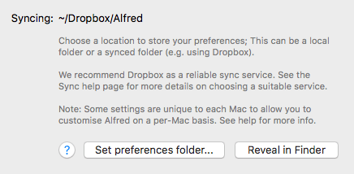

Syncing Your Alfred Settings Between Macs
You can sync your Alfred preferences via Dropbox. This is convenient both as a backup of your settings and, if you have more than one Mac, so that both have access to the same workflows, snippets, themes, etc that you've taken the time to set up.
We recommend Dropbox as the most reliable way to sync your preferences. iCloud and Google Drive are not recommended.
If you choose to experiment with a sync service other than Dropbox, we recommend backing up the Alfred.alfredpreferences package locally first, so that you can revert to them if you experience any issues.
Not all preferences are synced between your Macs, as some can be customised independently on each Mac.
- Requirements for Preferences Syncing
- Setting up Syncing on your Primary Mac
- Setting up Syncing on your Second Mac
- Which settings are not synced?
- Can I use a sync service other than Dropbox?
- Why can't I use the Dropbox Apps folder?
Requirements for Preferences Syncing
This guide will take you through the steps required to set up syncing on two Macs using Dropbox.
To follow this workflow, you'll need to have the following:
- Your Alfred Powerpack activated on both Macs
- The Dropbox application installed and running on both Macs
We recommend Dropbox, due to its reliability. We don't recommend using iCloud or Google Drive as an alternative.
Please ensure that Smart Sync is disabled in Dropbox, as Alfred needs live access to many of the files in your preferences, and Smart Sync may make these unavailable.
Setting up syncing on your primary Mac
Start the setup process on the Mac that contains the settings you want to copy to the second Mac.
The settings on the first Mac will overwrite anything you have on the second Mac, so make sure you've set it up just how you want it.
You're now ready to set your sync folder on your first Mac:

- Launch Alfred's preferences to the Advanced tab.
- In the bottom right, you will see the Syncing settings. Click on "Set preferences folder…"
- Choose a location within Dropbox where you want to sync your settings (e.g. ~/Dropbox/Alfred/) and click "Set folder and restart Alfred"
- Alfred will relaunch, using the settings location you've just set on Dropbox
- You'll see the Dropbox spinning arrows as it syncs your settings to your online account. Allow Dropbox to sync fully before starting setup on your second Mac.
Setting up syncing on your second Mac
Before you start, ensure that Dropbox is fully up-to-date and has synced all previously changed files from your other Mac.
- Check that Dropbox has synced your newly added settings file from your online account. You should see an Alfred.alfredpreferences file in the Dropbox folder you picked, and the Dropbox icon should no longer be showing spinning arrows.
- Launch Alfred's preferences to the Advanced tab and click on the "Set preferences folder…"
- Find the Dropbox folder in which your first Mac's Alfred.alfredpreferences file is located and click "Set folder and restart Alfred"
- Once Alfred has restarted, you'll be using your synced settings.
You can now complete the setup on your second Mac, as a few key settings are individual to each Macs (e.g. your primary Alfred hotkey)
Which settings aren't shared between your Macs?
If you've configured syncing, most of your Alfred settings are shared between your Macs. Certain settings are deliberately treated independently on each Mac to allow you to customise each one (e.g. your home and work Mac) to use context-relevant settings, like a different colour theme or home folder.
The non-synced settings are:
- Alfred's main hotkey
- Default results search scope
- Currently selected theme (allows different theme per Mac)
- Dictionary language for spell and define keywords
- Clipboard History enabled and history data
- Custom home folder for File System Navigation
- 1Password enabled and keychain location
- Snippet Auto-Expansion
- Web Bookmarks Sources and profile selection
- iTunes Mini Player Alfred playlist local suffix
- Workflow proxy settings
- Alfred auto-update settings
Can I use a sync service other than Dropbox?
You can use any service that syncs files locally in the same way Dropbox does.
iCloud - not recommended
Apple's iCloud service is not recommended for preferences syncing, due to iCloud's use of Optimised Storage, as well as being significantly slower and less consistently reliable than Dropbox, which can lead to file conflicts that iCloud is unable to resolve.
If you've previously used iCloud for syncing and your preferences disappear, please take a look at Apple's Optimised Storage feature and disable it, as this iCloud feature may be moving your files to cloud-only access if it believes they're not in use.
Google Drive - not recommended
Google Drive / Google Drive File Stream is not recommended as, depending on configuration, files are not available immediately on startup. As a result, Alfred may create a new set of preferences if your existing preferences are unavailable.
If you choose to experiment with a sync service other than Dropbox, we recommend backing up the Alfred.alfredpreferences package locally first, so that you can revert to them if you experience any issues.
Why can't I use the Apps folder in Dropbox?
Here's why we currently disallow use of the /Dropbox/Apps/ folder.